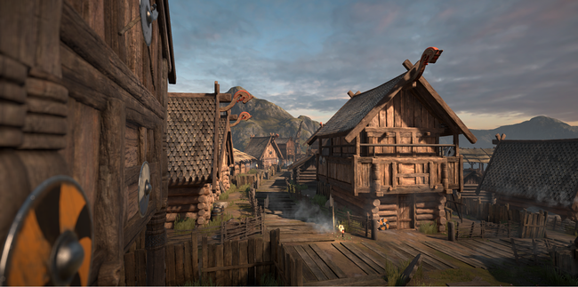
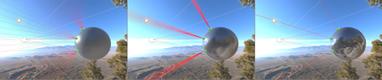

Thank you for helping us improve the quality of Unity Documentation. Although we cannot accept all submissions, we do read each suggested change from our users and will make updates where applicable.
For some reason your suggested change could not be submitted. Please try again in a few minutes. And thank you for taking the time to help us improve the quality of Unity Documentation.

A scene rendered using the standard shader on all models
The Standard shader makes PBS (Physically Based Shading) easily accessible to Unity users. It is designed with hard surfaces in mind (which are also known as “architectural” materials), and can deal with most real world materials like stone, ceramics, brass, silver or rubber. It will even do a decent job with non-hard materials like skin, hair or cloth.
Unity uses PBS to create a user friendly way of achieving a consistent, plausible look under all lighting conditions. In order to do so it models how light behaves in reality and follows principles of physics.
This is in contrast to older methods of shading used in earlier versions of Unity, where there was a large range of different types of shaders available to choose from. In this older method, each type of shader had its own special purposes - such as Diffuse, Specular, Bumped Specular, Reflective, etc.
With the standard shader, all of these different requirements are combined into a single shader which is intended to be used across all material types. The benefit is that the same lighting calculations are used in all areas of your scene, which gives a realistic, consistent and believable distribution of light and shade across all models which use the shader.
Terminology
There are a number of concepts that are very useful when talking about Physically Based Shading (PBS) in Unity, we’d advise you to become familiar with them. These include:
Energy conservation - Which points to the fact that objects never reflect more light than they receive. The more specular a material is, the less diffuse it should be; the smoother a surface is the stronger and smaller the highlight gets, and so on.

The light rendered at each point on a surface is calculated to be the same as the amout of light received from its environment. The micro facets of rough surfaces are affected by light from a wider area. Smoother surfaces give stronger and smaller highlights. Point A reflects light from the source towards the camera. Point B takes on a blue tint from ambient light from the sky, and Point C takes its ambient and reflective lighting from the surrounding ground colours.
HDR - High Dynamic Range, which refers to colours outside of the usual 0…1 range. For instance, the sun can easily be ten times brighter than a blue sky. For an in depth discussion please see the HDR manual page.
A scene using High Dynamic Range. The sunlight reflecting in the car window can appear far brighter than other objects in the scene, because it has been processed using HDR